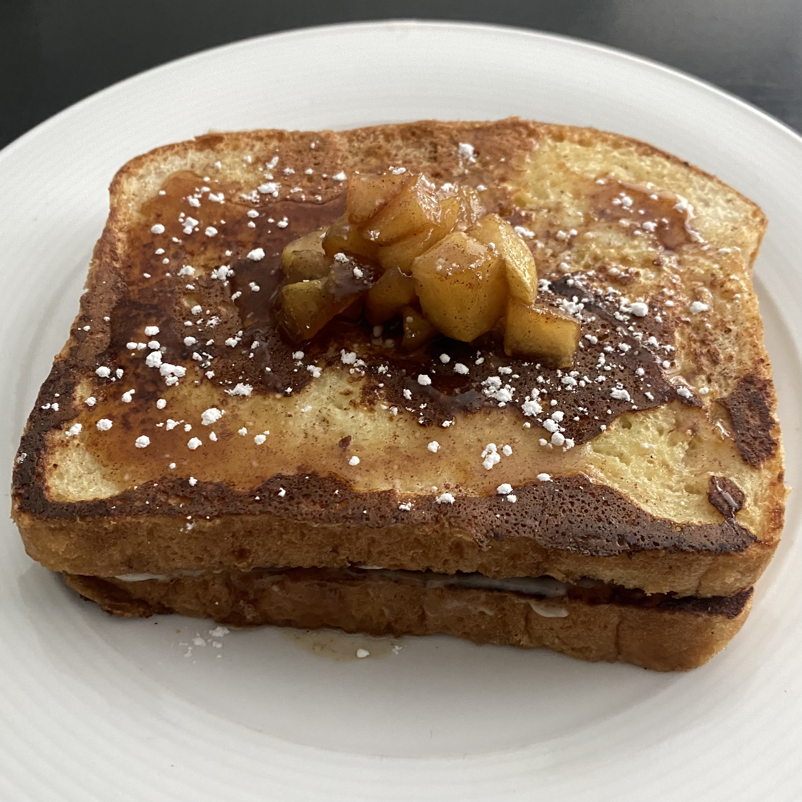

Stuffed French Toast

Description:
Thick slices of bread, cooked to golden perfection, stuffed with a sweet cinnamon cream cheese filling and topped with tart carmalized apples. Stuffed French Toast is great for a weekend morning breakfast!
Serving Size: 3 people | 🕔 Time: 30 minutes | 🍴Type: Sweet
Ingredients
- 6 pieces of Bread
- 3 Eggs
- 2 tbsp Milk
- 1 tsp Vanilla
- Cinnamon
Filling
- 1 Apple
- 2 tbsp Butter
- 4 tbsp Cream Cheese
- 2 tbsp Sugar
- 2 tbsp Brown Sugar
Steps
- Add two eggs, vanilla, sugar, and milk to a bowl and mix.
- Heat up pan and add a sprinkling of cinnamon on top of the egg mixture.
- Dip your bread into the mixture and then add to the pan.
- Let cook for desired time.
Apple Filling
- Peel your apple and cut into small chunks.
- Add butter to a small pot.
- Add in apple, brown sugar, and cinnamon to pot.
Cream Cheese Filling
- Add softened cream cheese to a small bowl .
- Mix in your sugar, cinnamon, and vanilla.
Assembly
- Once french toast and apples are done, it is time to assemble.
- First place one piece of french toast and add some of the cream cheese filling, spread. Add apples on top of the cream cheese filling. Top with more apples.
- Enjoy!
Back